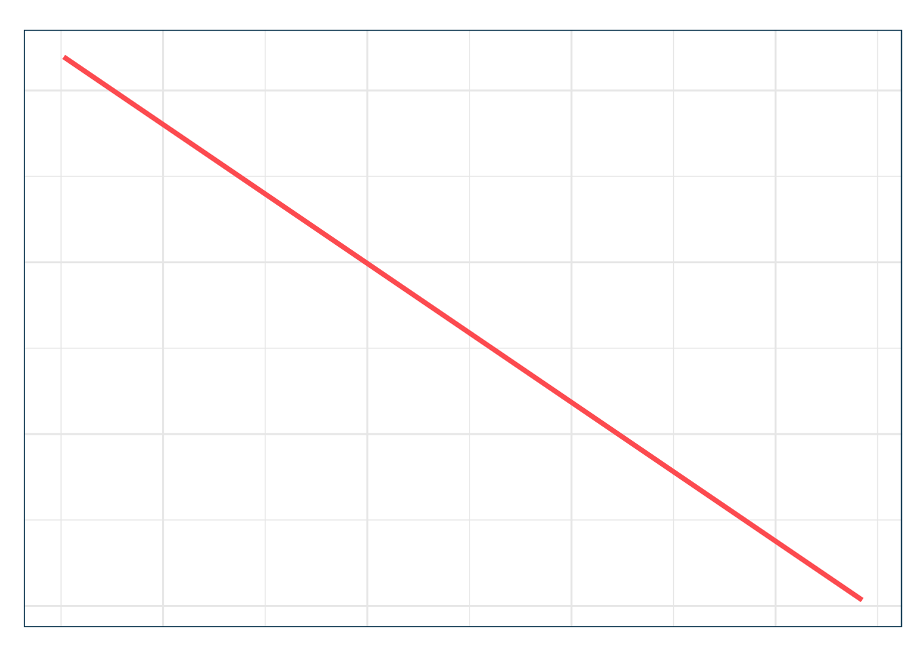
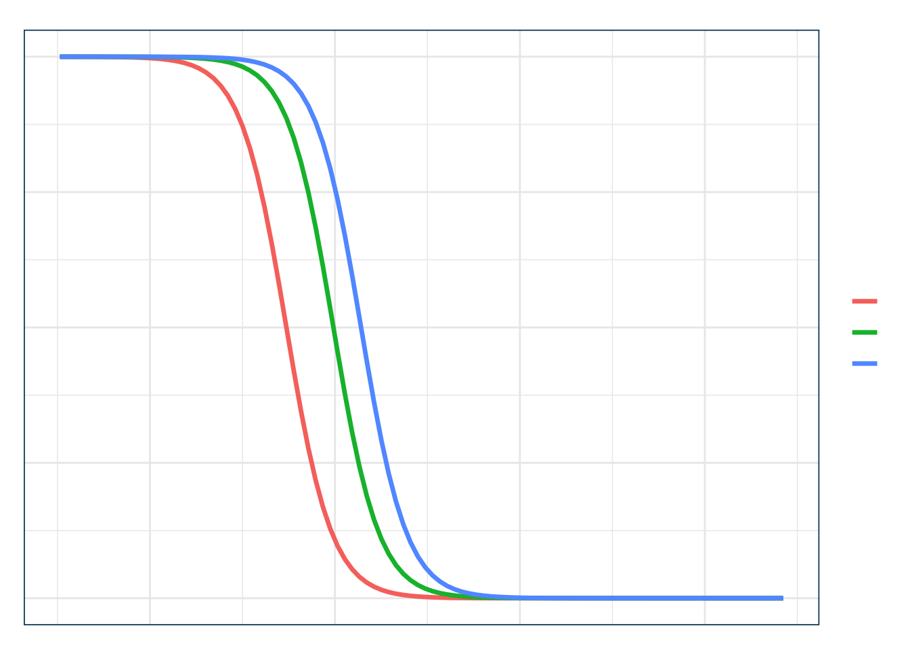

Práctica: Interpretación de la Regresión Logística
1. El Modelo Logístico
En esta práctica trabajamos con la base mtcars para predecir si un automóvil tiene transmisión manual (am = 1). Consideramos dos predictores:
- wt: peso del auto en miles de libras.
- hp: caballos de fuerza del motor.
La regresión logística modela la probabilidad de un evento binario en función de covariables. Con el link logit transformamos la probabilidad:
\[ \text{logit}(p_i) = \ln \frac{p_i}{1-p_i} = \beta_0 + \beta_1 wt_i + \beta_2 hp_i \]
Code
> # Cargar y preparar los datos
> data(mtcars)
> mtcars <- as_tibble(mtcars)
>
> # Ajustar modelo logístico
> logit_model <- glm(am ~ wt + hp, data = mtcars, family = binomial(link = "logit"))
> summary(logit_model)#>
#> Call:
#> glm(formula = am ~ wt + hp, family = binomial(link = "logit"),
#> data = mtcars)
#>
#> Coefficients:
#> Estimate Std. Error z value Pr(>|z|)
#> (Intercept) 18.86630 7.44356 2.535 0.01126 *
#> wt -8.08348 3.06868 -2.634 0.00843 **
#> hp 0.03626 0.01773 2.044 0.04091 *
#> ---
#> Signif. codes: 0 '***' 0.001 '**' 0.01 '*' 0.05 '.' 0.1 ' ' 1
#>
#> (Dispersion parameter for binomial family taken to be 1)
#>
#> Null deviance: 43.230 on 31 degrees of freedom
#> Residual deviance: 10.059 on 29 degrees of freedom
#> AIC: 16.059
#>
#> Number of Fisher Scoring iterations: 82. Efecto Lineal sobre el Logit
En la escala del logit, la relación es lineal y constante:
wt = -8.08: cada 1000 lbs adicionales reducen el logit en 8.08 unidades, manteniendo fija la potencia.hp = 0.036: cada caballo de fuerza aumenta el logit en 0.036 unidades, manteniendo fijo el peso.
Code
> # Grilla para predicciones con hp promedio
> newdata <- tibble(
+ wt = seq(min(mtcars$wt), max(mtcars$wt), length.out = 100),
+ hp = mean(mtcars$hp)
+ )
>
> newdata$logit_pred <- predict(logit_model, newdata = newdata, type = "link")
>
> ggplot(newdata, aes(x = wt, y = logit_pred)) +
+ geom_line(color = julia$coral, linewidth = 1.3) +
+ labs(
+ title = "Efecto de 'wt' sobre el Logit",
+ subtitle = "Manteniendo la potencia constante en su media",
+ x = "Peso del vehículo (wt, en 1000 lbs)",
+ y = "Logit(P(am=1))"
+ ) +
+ theme_julia()
3. Efecto Multiplicativo sobre las Odds
Exponenciando los coeficientes obtenemos las odds ratios:
- Para
wt: \(e^{-8.08} \approx 0.0003\) → odds se reducen más de 99.9%. - Para
hp: \(e^{0.036} \approx 1.037\) → odds aumentan 3.7% por caballo de fuerza.
Code
> modelsummary(logit_model, exponentiate = TRUE, gof_map = "nobs")| (1) | |
|---|---|
| (Intercept) | 1.561455e+08 |
| (1.162278e+09) | |
| wt | 0.000000e+00 |
| (1.000000e-03) | |
| hp | 1.037000e+00 |
| (1.800000e-02) | |
| Num.Obs. | 32 |
4. Efecto sobre la Probabilidad
En la escala de probabilidad, los efectos no son constantes:
- Más fuertes cerca de \(p=0.5\).
- Más débiles en los extremos (cerca de 0 o 1).
Code
> # Curvas sigmoides para distintos niveles de hp
> data_plot <- expand.grid(
+ wt = seq(min(mtcars$wt), max(mtcars$wt), length.out = 100),
+ hp = c(90, mean(mtcars$hp), 180)
+ )
>
> data_plot$prob_pred <- predict(logit_model, newdata = data_plot, type = "response")
>
> ggplot(data_plot, aes(x = wt, y = prob_pred, color = factor(hp))) +
+ geom_line(linewidth = 1.2) +
+ labs(
+ title = "Efecto sobre la Probabilidad",
+ subtitle = "Curvas sigmoides para distintos niveles de potencia",
+ x = "Peso del vehículo (wt, en 1000 lbs)",
+ y = "Probabilidad de transmisión manual",
+ color = "Potencia (hp)"
+ ) +
+ theme_julia()
5. Efectos Marginales
En los modelos logísticos, los coeficientes (β) no se interpretan directamente en términos de probabilidades, sino en la escala del logit. Para facilitar la interpretación, usamos efectos marginales, que traducen esos coeficientes en cambios en la probabilidad de ocurrencia del evento (aquí, tener transmisión manual).
Los efectos marginales muestran cómo varía la probabilidad de éxito (am = 1) frente a un cambio pequeño en una variable explicativa, manteniendo las demás constantes.
Existen tres maneras habituales de calcularlos:
- AME (Average Marginal Effects): promedio de los efectos marginales individuales en toda la muestra. Responde a: “en promedio, ¿cómo cambia la probabilidad si todos aumentaran en una unidad su predictor?”
- MEM (Marginal Effects at the Mean): evalúa los efectos marginales en el individuo promedio, es decir, tomando los valores medios de los predictores.
- MER (Marginal Effects at Representative Values): muestra los efectos en casos concretos, definidos por combinaciones específicas de las variables.
AME
Code
> avg_slopes(logit_model)#>
#> Term Estimate Std. Error z Pr(>|z|) S 2.5 % 97.5 %
#> hp 0.00161 0.000572 2.82 0.00483 7.7 0.000491 0.00273
#> wt -0.35960 0.057144 -6.29 < 0.001 31.6 -0.471597 -0.24760
#>
#> Type: response
#> Comparison: dY/dXInterpretación:
wt: en promedio, cada 1000 lbs adicionales de peso reducen la probabilidad de tener transmisión manual en 0.36 puntos porcentuales. Esto significa que, en toda la muestra, un auto más pesado tiende a ser menos probable que tenga transmisión manual, aunque el efecto no es enorme.hp: en promedio, cada caballo de fuerza adicional aumenta la probabilidad en 0.0016 puntos porcentuales. El efecto es muy pequeño, pero indica que la mayor potencia se asocia (ligeramente) a transmisiones manuales.
üëâ El AME ofrece una visi√≥n global, útil cuando queremos un resumen simple del efecto promedio.
MEM
Code
> vm <- expand.grid(wt = mean(mtcars$wt,na.rm=T), hp = mean(mtcars$hp,na.rm=T))
> mem <- slopes(logit_model, newdata = vm) %>%
+ select(term, estimate, std.error, conf.low, conf.high, p.value)
>
> bind_cols(vm, mem)#> wt hp term estimate std.error conf.low conf.high
#> 1 3.21725 146.6875 hp 0.004344052 0.0028710 -0.001283004 0.009971108
#> 2 3.21725 146.6875 wt -0.968541309 0.6017158 -2.147882603 0.210799986
#> p.value
#> 1 0.1302593
#> 2 0.1074781Interpretación:
- Para el auto promedio (con el peso y la potencia media del dataset), el efecto de
wtes de -0.97. Es decir, en ese punto específico, aumentar el peso en 1000 lbs reduce la probabilidad de transmisión manual en casi 1 punto porcentual. - Para
hp, el efecto sigue siendo positivo, pero es más pequeño en magnitud que el del peso.
üëâ El MEM es intuitivo porque se interpreta en un caso concreto (el promedio). Sin embargo, puede ser enga√±oso si el ‚Äúauto promedio‚Äù no es representativo de autos reales (por ejemplo, un promedio de valores que rara vez coexisten en la realidad).
MER
Code
> vr <- expand.grid(wt = c(2, 4), hp = c(90, 150))
> mer <- slopes(logit_model, newdata = vr) %>%
+ select(term, estimate, std.error, conf.low, conf.high, p.value)
>
> bind_cols(bind_rows(vr,vr), mer)#> wt hp term estimate std.error conf.low conf.high p.value
#> 1 2 90 hp 9.283799e-05 2.150457e-04 -3.286439e-04 5.143199e-04 0.6659502
#> 2 4 90 hp 1.341350e-06 4.850124e-06 -8.164718e-06 1.084742e-05 0.7821180
#> 3 2 150 hp 1.059176e-05 3.023311e-05 -4.866404e-05 6.984757e-05 0.7260861
#> 4 4 150 hp 1.180396e-05 3.316358e-05 -5.319547e-05 7.680338e-05 0.7218920
#> 5 2 90 wt -2.069898e-02 4.527249e-02 -1.094314e-01 6.803348e-02 0.6475210
#> 6 4 90 wt -2.990649e-04 1.095575e-03 -2.446353e-03 1.848223e-03 0.7848723
#> 7 2 150 wt -2.361520e-03 6.699968e-03 -1.549321e-02 1.077018e-02 0.7244878
#> 8 4 150 wt -2.631788e-03 7.359182e-03 -1.705552e-02 1.179194e-02 0.7206280Interpretación:
- Para autos livianos (2000 lbs) con baja potencia (90 hp), el peso tiene un efecto negativo más reducido: cada incremento en el peso disminuye un poco la probabilidad de tener transmisión manual, pero no de forma dramática.
- Para autos pesados (4000 lbs), el efecto del peso sigue siendo negativo, aunque algo menor en magnitud que en el promedio.
- La potencia (hp) siempre tiene efectos pequeños y positivos, indicando que autos más potentes tienen una probabilidad ligeramente mayor de tener transmisión manual, tanto en livianos como pesados.
üëâ El MER es útil porque permite explorar c√≥mo cambian los efectos en situaciones representativas o extremas, mostrando la heterogeneidad de los efectos.
6. Conclusión
En la escala logit, los efectos son lineales y fáciles de calcular, pero difíciles de interpretar.
En la escala de odds, se interpretan como multiplicadores, lo cual es más informativo que el logit, pero aún abstracto.
En la escala de probabilidad, los efectos no son constantes: dependen del nivel de las covariables. Por eso es necesario mirar AME, MEM y MER para obtener una imagen completa.
Cada medida responde a una pregunta distinta:
- AME: visión promedio global.
- MEM: visión puntual en el “individuo promedio”.
- MER: visión contextualizada en escenarios concretos.
En resumen, no existe una única interpretación de los efectos marginales. La escala (logit, odds, probabilidad) y el escenario (promedio, promedio de covariables, o casos representativos) condicionan la lectura. Entender estas diferencias es clave para comunicar correctamente los resultados.